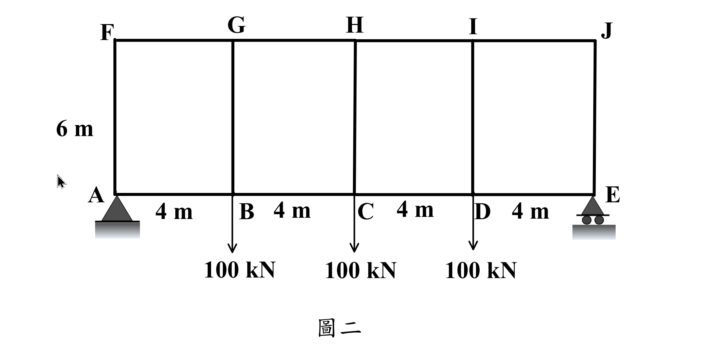

考題編號：SA-2019-2
主分類： SA-U3-2 建築結構系統分析
分析法： 近似分析法 (反曲點法)
標籤： 范倫迪爾桁架 近似分析 反曲點 彎矩圖 軸力圖
1. 原始題目重述 (Problem Restatement)
二、范倫迪爾桁架（Vierendeel Truss）實際上受力行為像是構架，因為構件彼此接合為剛接。考慮圖二之范倫迪爾桁架，其受力後各構件受彎矩之變形為一雙曲率變形，採近似分析時可假設反曲點位於各構件之中點，據此假設，分析該桁架，並繪出上下弦桿之彎矩圖、軸力圖及腹桿之彎矩圖、軸力圖。（25 分）

圖說：4跨范倫迪爾桁架，節點 A 到 E 為下弦，F 到 J 為上弦。每跨寬 4m，總寬 16m；高 6m。支承 A 為鉸接，E 為滾支承。節點 B、C、D 各受向下 100 kN 之集中載重。
2. 考題核心精神與出題者意圖 (Core Concepts & Examiner's Intent)
本題測驗考生對剛接構架（范倫迪爾桁架）之近似分析法的掌握。
出題者直接給定關鍵假設：「反曲點位於各構件之中點」，此條件提供了足夠的靜力平衡方程式（中點處彎矩 $M=0$），使原本高次靜不定的剛架退化為靜定結構。考生需利用全域剪力與彎矩，搭配各節點與半桿件的自由體圖，有系統地解出所有桿件的軸力、剪力與端點彎矩。
3. 解題戰略地圖與陷阱分析 (Strategic Roadmap & Trap Analysis)
- 全域分析：
- 由於結構與載重皆對稱，直接求出外部反力 $R_A = R_E = 150\text{ kN}$。
- 計算各跨段（Panel）中點位置的全域剪力 $V_i$ 與全域彎矩 $M_i$。
- 弦桿軸力分析：
- 於各跨段中點切開，由 $\sum M = 0$ 求出上下弦桿的軸力（形成力偶抵抗全域彎矩）。
- 腹桿剪力與弦桿剪力分配：
- 隔離各頂部節點（包含半段桿件），利用 $\sum F_x = 0$ 由弦桿軸力差求出腹桿剪力。
- 藉由節點的 $\sum M = 0$ 證明並求出上下弦桿平分全域剪力（即 $V_{top} = V_{bot} = V_{panel}/2$）。
- 腹桿軸力分析：
- 隔離頂部節點，利用 $\sum F_y = 0$ 由弦桿剪力差求出腹桿軸力。
- 彎矩圖繪製：
- 各桿端彎矩為其剪力乘上「半桿長度」（$M_{max} = V \times L/2$），且皆為雙曲率分佈（過中點為零）。
[!TIP] 陷阱警告
1. 剪力平分假設的必要性： 許多考生會憑直覺直接假設上下弦桿剪力平分。雖然結果正確，但在本題中，這其實是由節點彎矩平衡所推導出的必然結果，若能寫出推導過程，將可展現更清晰的力學觀念。
2. 符號與方向的統一： 桿件眾多，強烈建議畫出節點自由體圖（包含切開至反曲點的半桿），嚴格遵守平衡方程式，避免軸力拉壓或彎矩方向錯亂。
3.5 變數層次分析 (Variable Hierarchy Analysis)
複習提示：第一次解題後，在每個卡住的知識點旁標記
⚠；第二次複習時只看有⚠的項目。
最終目標
利用反曲點假設解出所有桿件之 M、V、N 並繪製圖別
本題關鍵公式（依計算順序）
$\boxed{\cdot}$ = 需由前步驟推導，非題目直接給定的變數
$$\text{Step 1: } N_{top} = -\frac{M_{global}}{h}, \quad N_{bot} = \frac{M_{global}}{h}$$
$$\text{Step 2: } V_{vert} = \Delta \boxed{N_{top}}$$
$$\text{Step 3: } V_{top} = V_{bot} = \frac{V_{global}}{2}$$
$$\text{Step 4: } N_{vert} = \Delta \boxed{V_{top}} - P_{ext}$$
$$\text{Step 5: } M_{end} = \boxed{V_{member}} \times \frac{L_{member}}{2}$$
L1：題目直接給定
| 符號 | 數值 | 說明 |
|---|---|---|
| $L$ | $4\text{ m}$ | 弦桿跨距 (各跨) |
| $h$ | $6\text{ m}$ | 腹桿高度 |
| $P_B, P_C, P_D$ | $100\text{ kN} (\downarrow)$ | 外加載重 |
L2：需知識點推導
Step 1：弦桿軸力
| 符號 | 公式/來源 | 卡關? |
|---|---|---|
| $N_{top}$ | 切面力偶平衡：$-M_{global} / h$ |
Step 2：腹桿剪力
| 符號 | 公式/來源 | 卡關? |
|---|---|---|
| $V_{vert}$ | 頂部節點 $\sum F_x = 0$ |
Step 3：腹桿軸力
| 符號 | 公式/來源 | 卡關? |
|---|---|---|
| $N_{vert}$ | 頂部節點 $\sum F_y = 0$ |
L3：深層知識（不懂就卡住）
| 知識點 | 說明 | 卡關? |
|---|---|---|
| 反曲點的力學意義 | 彎矩為零，可視為鉸接。取包含反曲點的自由體圖即可避開彎矩未知數。 |
4. 步驟化詳細計算過程 (Step-by-Step Detailed Calculation)
Step 1：全域反力與各跨段截面力
由對稱性，支承反力為：
$$R_A = R_E = \frac{100 \times 3}{2} = 150\text{ kN} (\uparrow)$$
各跨段 (Panel) 之中點 (反曲點) 處，計算全域剪力 $V$ 與全域彎矩 $M$：
-
Panel 1 (AB, FG), $x=2\text{m}$：
$V_1 = 150\text{ kN}$
$M_1 = 150 \times 2 = 300\text{ kNm}$ -
Panel 2 (BC, GH), $x=6\text{m}$：
$V_2 = 150 - 100 = 50\text{ kN}$
$M_2 = 150 \times 6 - 100 \times 2 = 700\text{ kNm}$ -
Panel 3 (CD, HI), $x=10\text{m}$：
$V_3 = -50\text{ kN}$
$M_3 = 700\text{ kNm}$ -
Panel 4 (DE, IJ), $x=14\text{m}$：
$V_4 = -150\text{ kN}$
$M_4 = 300\text{ kNm}$
Step 2：弦桿軸力計算
在各跨段中點作垂直切面，反曲點彎矩為零，全域彎矩由上下弦桿之軸力偶抵抗：
$N_{top} \times h + M_i = 0 \Rightarrow N_{top} = -M_i / 6$ (壓為負)
$N_{bot} \times h - M_i = 0 \Rightarrow N_{bot} = M_i / 6$ (拉為正)
- Panel 1: $N_{FG} = -50\text{ kN}$, $N_{AB} = 50\text{ kN}$
- Panel 2: $N_{GH} = -116.67\text{ kN}$, $N_{BC} = 116.67\text{ kN}$
- Panel 3: $N_{HI} = -116.67\text{ kN}$, $N_{CD} = 116.67\text{ kN}$
- Panel 4: $N_{IJ} = -50\text{ kN}$, $N_{DE} = 50\text{ kN}$
Step 3：腹桿剪力與弦桿剪力計算
隔離頂部各節點（切斷點均在相鄰桿件中點）：
-
節點 F：$\sum F_x = 0 \Rightarrow V_{FA} = -N_{FG} = 50\text{ kN}$
$\sum M_F = 0 \Rightarrow V_{FG} \times 2 - V_{FA} \times 3 = 0 \Rightarrow V_{FG} = 75\text{ kN}$
（由於 $V_1 = 150\text{ kN}$，可知 $V_{AB} = 150 - 75 = 75\text{ kN}$。上下弦桿平分剪力得證） -
節點 G：$\sum F_x = 0 \Rightarrow V_{GB} = N_{FG} - N_{GH} = -50 - (-116.67) = 66.67\text{ kN}$
$\sum M_G = 0 \Rightarrow V_{FG} \times 2 + V_{GH} \times 2 - V_{GB} \times 3 = 0 \Rightarrow 150 + 2V_{GH} - 200 = 0 \Rightarrow V_{GH} = 25\text{ kN}$
（$V_{BC} = 50 - 25 = 25\text{ kN}$） -
節點 H：$\sum F_x = 0 \Rightarrow V_{HC} = N_{GH} - N_{HI} = 0\text{ kN}$
對稱性知 $V_{HI} = V_{CD} = -25\text{ kN}$ -
節點 I：$\sum F_x = 0 \Rightarrow V_{ID} = N_{HI} - N_{IJ} = -116.67 - (-50) = -66.67\text{ kN}$
$V_{IJ} = V_{DE} = -75\text{ kN}$ -
節點 J：$\sum F_x = 0 \Rightarrow V_{JE} = N_{IJ} - 0 = -50\text{ kN}$
Step 4：腹桿軸力計算
對頂部節點取 $\sum F_y = 0$（向下為負，各剪力定義為左/上部受力）：
- 節點 F：$N_{FA} = -V_{FG} = -75\text{ kN}$ (C)
- 節點 G：$N_{GB} = V_{FG} - V_{GH} = 75 - 25 = 50\text{ kN}$ (T)
- 節點 H：$N_{HC} = V_{GH} - V_{HI} = 25 - (-25) = 50\text{ kN}$ (T)
- 節點 I：$N_{ID} = V_{HI} - V_{IJ} = -25 - (-75) = 50\text{ kN}$ (T)
- 節點 J：$N_{JE} = V_{IJ} - 0 = -75\text{ kN}$ (C)
Step 5：各桿端彎矩 (繪圖依據)
各桿件皆為雙曲率，彎矩圖呈漏斗狀交於中點。端點最大彎矩 $M = V \times (L_{member}/2)$：
-
上下弦桿 ($L/2 = 2\text{ m}$)：
$M_{FG} = M_{AB} = 75 \times 2 = 150\text{ kNm}$
$M_{GH} = M_{BC} = 25 \times 2 = 50\text{ kNm}$
$M_{HI} = M_{CD} = 50\text{ kNm}$
$M_{IJ} = M_{DE} = 150\text{ kNm}$ -
腹桿 ($h/2 = 3\text{ m}$)：
$M_{FA} = M_{JE} = 50 \times 3 = 150\text{ kNm}$
$M_{GB} = M_{ID} = 66.67 \times 3 = 200\text{ kNm}$
$M_{HC} = 0\text{ kNm}$
繪圖指示：
- 軸力圖 (AFD)：弦桿依力學分析，上弦全壓、下弦全拉，且在中間跨段絕對值最大 ($116.67$)；腹桿中，外側受壓 ($-75$)，內部受拉 ($+50$)。
- 彎矩圖 (BMD)：各桿皆畫成 X 型或平行四邊形交錯，中點數值標示為 0，端點數值依 Step 5 標示。
5. 關鍵爭議點與進階探討 (Critical Issues & Advanced Discussion)
-
反曲點假設的精確度：
真實結構中，只有在所有弦桿勁度相等、所有腹桿勁度相等，且各跨段均勻對稱時，反曲點才會精確落於各桿中點。本題為典型的「門架法 (Portal Method)」應用，出題者直接指示假設反曲點於中點，是為了將高次靜不定結構簡化成靜定問題，考驗學生的靜力平衡操作能力。 -
剛接與鉸接的差異：
范倫迪爾桁架無斜撐桿件，完全依賴節點的剛接（提供彎矩抵抗能力）來承受剪力。這也是為何它的剪力與彎矩分佈會呈現類似剛架的特徵，與一般桁架僅受軸力截然不同。